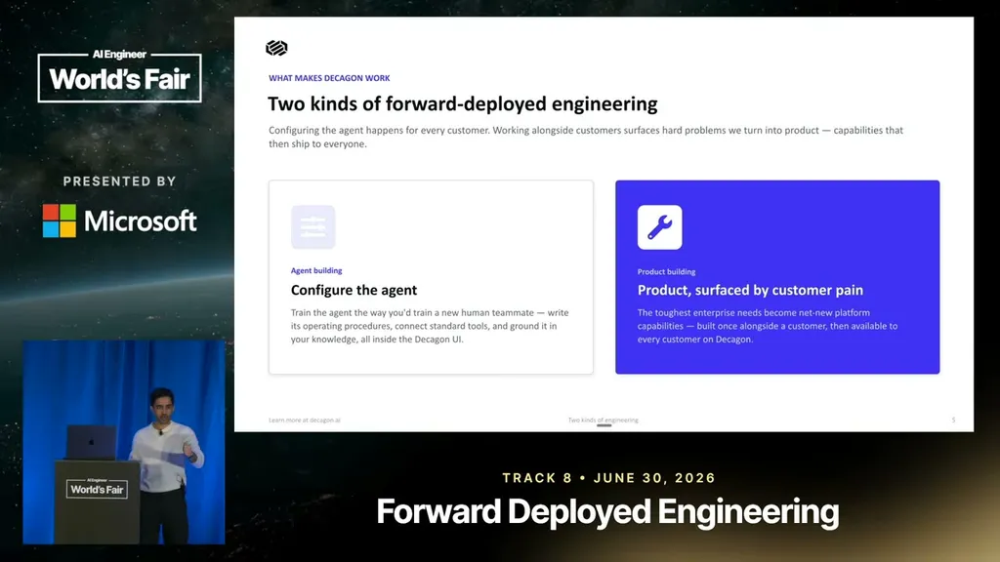
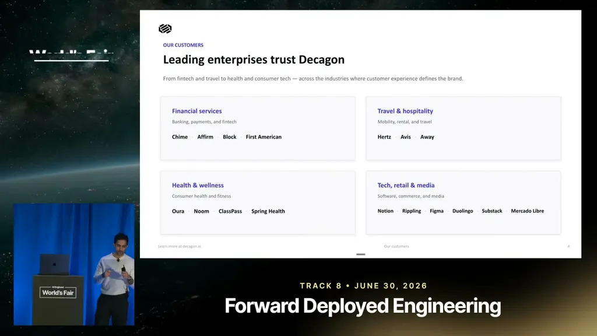
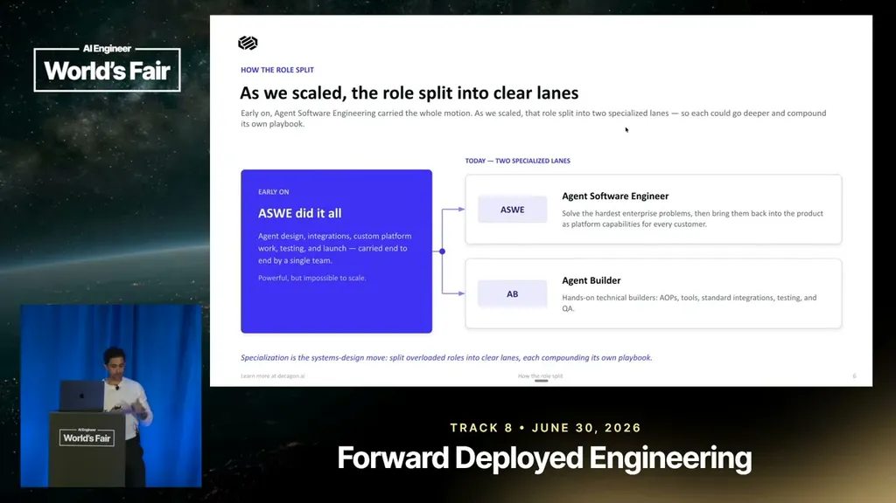
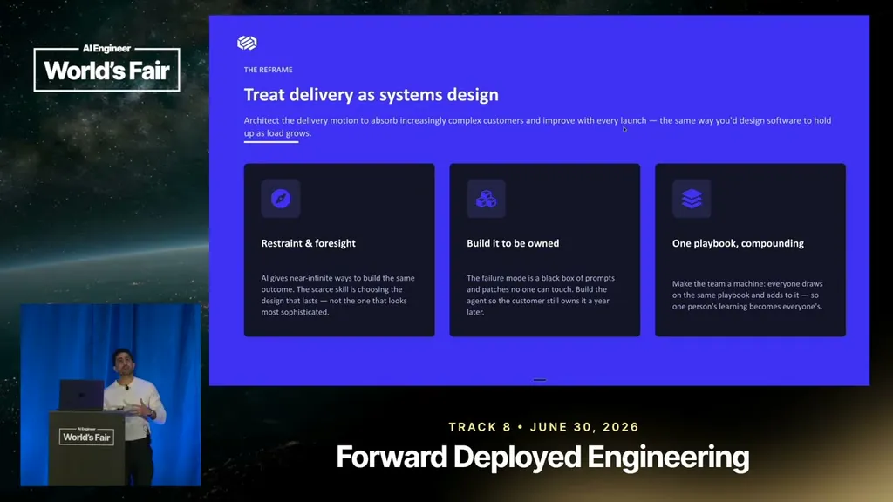
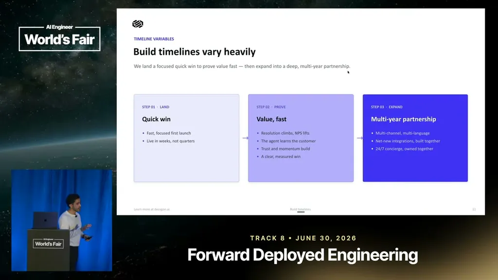

Rekhi describes Decagon's headcount growing from 50 to 500 people over roughly a year. As the company scaled, it deliberately broke apart a single blended 'agent software engineer' role — which had handled both configuring the agent for a customer and building custom product features — into two specialized lanes to make the system scale.
“A year ago we were at 50 people.”
▶ watch at 06:10“effectively we we we broke apart this agent software engineering role into two specialized lanes.”
▶ watch at 06:40
Rekhi frames Decagon's forward-deployed work as two distinct motions: configuring the AI customer-service agent's behavior and tonality for a given enterprise (often within the product UI), and being the front line for customer product requests that then need to get folded back into the core product. He gives Hertz as an example of a customer relationship that expanded from inbound support deflection into proactive revenue workflows, like reaching out when it's time to renew a car lease.
“I imagine this is the case for a lot of agentic companies, but Decagon has effectively two kinds of forward deployment engineering.”
▶ watch at 03:37“Decagon now does for them is to reach out proactively to a customer when it's time to renew their car lease or extend it or whatever, and they can do that from within Decagon.”
▶ watch at 02:34
Rekhi argues that with AI coding tools now capable of quickly producing a one-off fix, the harder and scarcer skill for a forward-deployed engineer is restraint — resisting the temptation to just prompt a coding agent to patch a single customer's request, and instead architecting a solution that will scale to future customers.
“and Cloud Code to just do it for me. But the scarce skill now that AI coding is so good, the scarce skill is actually exercising restraint.”
▶ watch at 08:13
Decagon tries to pin down what success looks like for a customer — metrics, channels, pain points — in writing during the earliest deal conversations, before building anything. Rekhi describes how repeated one-off custom integrations eventually get promoted into self-serve product features once the pattern repeats enough (he cites building a self-serve integration path after roughly the 25th custom one).
“we've learned like early on when you're scoping the deal, like literally when the very first conversations, you want to figure out ahead of time what does success look like for the customer.”
▶ watch at 09:15“After like the 25th one, we're like, "I don't know how many more are coming up." Uh so, let's just like build it a self-serve way.”
▶ watch at 11:53
Rekhi recommends that forward-deployed staff treat themselves as advisors rather than pure executors of what a customer asks for, since Decagon can see patterns across many customers' historical support data and tell a given customer which workflow to automate first for the highest ROI, even when that differs from what the customer originally requested.
“you're you should treat yourself as an advisor rather than just an executor, right?”
▶ watch at 13:57
| Stance | Claim | t |
|---|---|---|
| asserts | Decagon grew from 50 to 500 employees in roughly a year, a pace of hypergrowth that forced its forward-deployed org design to change. | 06:10 |
| asserts | As Decagon scaled, it broke apart its combined agent-software-engineering role into two specialized lanes: agent builders and agent software engineers. | 06:40 |
| warns | Now that AI coding makes one-off fixes trivially easy, the scarce skill for a forward-deployed engineer is exercising restraint rather than shipping the quick patch. | 08:13 |
| recommends | Rekhi recommends nailing down, in writing during the earliest deal conversations, what success looks like for the customer before starting to build. | 09:15 |
| asserts | After building roughly 25 custom one-off integrations, Decagon decided to build a self-serve integration path instead of continuing to hand-build each one. | 11:53 |
| recommends | Rekhi recommends forward-deployed staff treat themselves as advisors who use cross-customer data to recommend the highest-ROI workflow, not just executors of the customer's literal request. | 13:57 |
| asserts | Decagon's relationship with a customer like Hertz expanded from deflecting inbound support cases into proactive outreach, such as reminding customers when it's time to renew a car lease. | 02:34 |
| asserts | Rekhi describes Decagon as having two distinct kinds of forward-deployed engineering work, one focused on configuring the agent and one on handling customer product requests. | 03:37 |
Machine-readable copy embedded in this page (script#ontology) and in the corpus ontology.